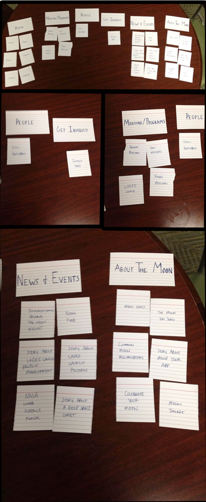

The Sorters
The Sorts

The Results
The process of card sorting the NASA site was very interesting. I had to look at the site to make the cards so my sort was a little bit biased but it still turned out different from the current structure of the site. I put more of the news stories in different categories based on the subject rather than just on the homepage or the news and events page.
The other people that I recruited to do a sort had some cards in very similar places and some very different. A common theme was that the sub headings on the homepage that did not have any links under them on the site, usually did have cards placed under them in the sort. The one exception to this was the sub heading of strategic partners. Everyone who did the sort for this site did not have a good idea of what to put under this category. This leads me to conclude that this category should probably be named differently or just removed all together and have the content redistributed.